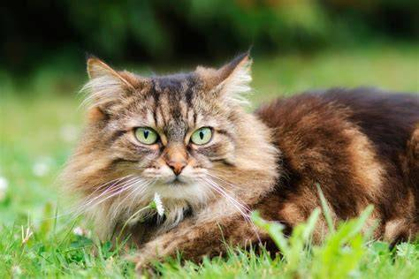
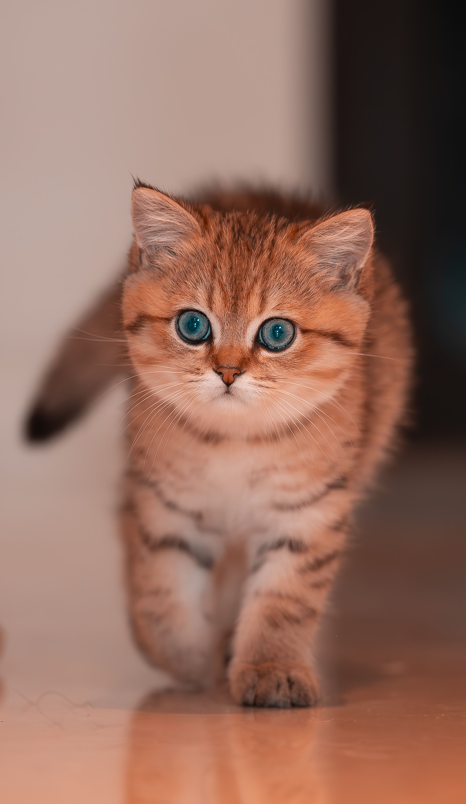
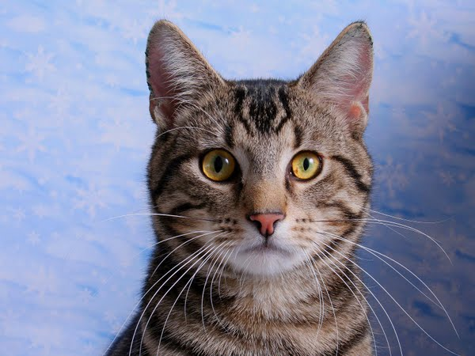

Vẻ đẹp hoang dã của mèo Maine Coon. Với bộ lông dày và đôi mắt sắc sảo, chúng như một tác phẩm nghệ
thuật tự nhiên. Chúng là những người bạn trung thành và kiên nhẫn.

Đôi mắt xanh như ngọc của nó có thể làm tan chảy mọi trái tim. Chú mèo Golden này là định nghĩa của sự
dễ thương.

Sự sắc sảo của mèo Mướp tự nhiên. Vằn lông cổ điển và ánh nhìn thông thái thể hiện một bản năng săn mồi
mạnh mẽ. Chú mèo này là một biểu tượng của sự bền bỉ.